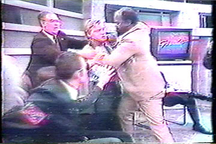
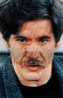
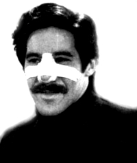
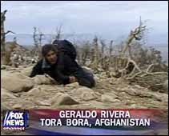

|
Geraldo RiveraGeraldo, a media pinhead, In November of 1988, the Geraldo daytime talk show achieved its highest ratings ever in over thirteen million homes. Young Hate Mongers featured John Metzger of the Aryan Youth Movement, and Robert Heick of the National Front (both white), Roy Innis of the Congress of Racial Equality (black), rabbi A. Bruce Goldman (Jewish), and a New Jersey couple who claimed they'd been attacked and terrorized by skinheads. Sitting in the audience was an army of neo-Nazi skinheads representing National Resistance. Metzger complained about "kikes" and called Innis an "uncle Tom." Innis walked over to Metzger, and placed his hands around the boy's neck. Pandemonium broke out in the studio, and within seconds Rivera was suffering from a broken nose - an injury inflicted by a chair was smashed across his face by Metzger's bodyguard.  Throughout the program, young white supremacists were taunted and goaded, being called "a bunch of young clowns." Rivera warned them not to push him too hard. Calling his guests "hate mongers," and using cockroach metaphors was Rivera's rhetorical strategy, and it certainly resulted in a brawl. Geraldo stood back and watched the violence ensue, until a chair flew across the room and collided with his face. Geraldo stepped into the ring and fought back well, throwing some terrific punches. Geraldo Rivera is often observed defending his professional reputation and journalistic sensibilities. In 1986 he hosted the nationally-broadcast special, The Mystery of Al Capone's Vault. With dramatic flair, he fired a submachine gun through the wall of the second floor gymnasium at the Lexington Hotel in Chicago, with the potential discovery of dead bodies, jewels, or historical artifacts. Inside the vault was a pile of dirt and one (1) beer bottle, the television equivalent of a pie in the face. Rivera aired a story for Fox News about American soldiers who were killed abroad by friendly fire during a US bombing raid. Rivera intoned the Lord's Prayer and described the site as ''hallowed ground''. The problem was, David Foklenfilk of The Baltimore Sun discovered Rivera had been hundreds of miles away during the incident. The Fox News Channel concluded that Rivera had made a regrettable error. Geraldo defended his reporting as ''an innocent mistake'' in which he mistook ''the carnage in Tora Bora'' for the bloodshed in Kandahar. He also presented evidence that another friendly-fire attack took place in Tora Bora, from where he delivered his disputed report. Later, on Live With Regis and Kelly, Rivera suggested that Folkenfilk was suffering from penis envy. In March of 2003, while on assignment covering the war in Iraq, Geraldo was told by American military officials that he was no longer welcome to accompany U.S. soldiers. It turns out that during an on-air appearance, he'd drawn a map in the sand revealing sensitive information about U.S. troop locations. |